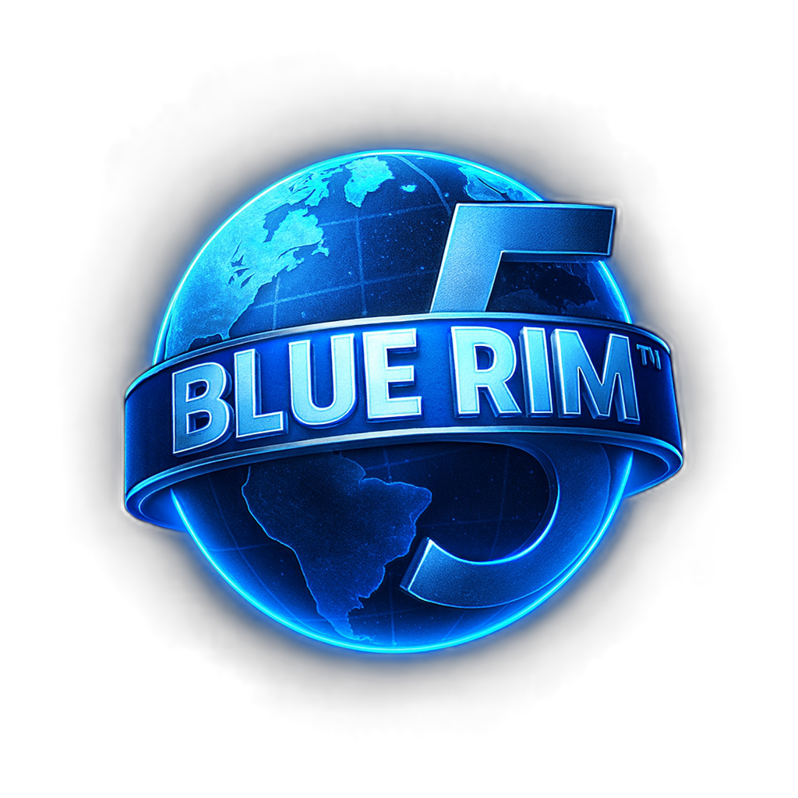
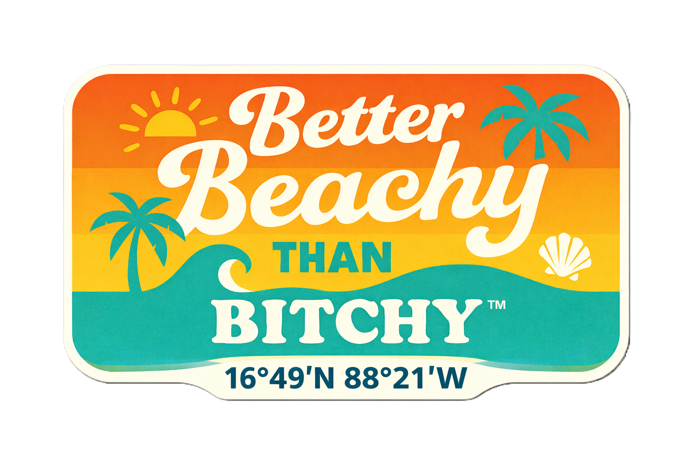

377 days. 63 stops. The Florida Gulf Coast, the Keys, the Dry Tortugas, the full Bahamas chain, Turks and Caicos, Puerto Rico, the Virgin Islands, the Lesser Antilles to Trinidad, then back west through Venezuela, Colombia, Panama, Nicaragua, Honduras, Belize, and home to Mexico. One small boat. Everything in between.
Ninety percent of this is pure fun on the water — sailing, snorkeling, diving, exploring every anchorage, eating what comes out of the sea, and having long conversations with interesting people at waterfront bars who know things you can't find on the internet. The other ten percent is paying attention — taking notes, shooting photos, noticing what's happening to the reefs and sharing it. No institutional partners, no reporting obligations, no one to answer to.
Shamrocket is a Hobie Getaway catamaran — 17 feet, 24-inch draft. She gets into places bigger boats anchor and stare at. Wind and solar only. Every anchorage earned.
Gulf Coast Florida, the Keys, Dry Tortugas, East Coast Florida, and into the Bahamas at Bimini. 23 stops.
Nov 1, 2026 – Mar 27, 2027 • 132 DaysGrand Bahama, Nassau, Andros, Eleuthera, the Exumas, Long Island, Crooked Island, Mayaguana, Great Inagua, Providenciales, Grand Turk. 11 stops.
Mar 27 – Jun 2, 2027 • 62 DaysPuerto Rico, Culebra, Vieques, USVI, BVI, St. Maarten, Antigua, Guadeloupe, Dominica, Martinique, St. Lucia, St. Vincent & Tobago Cays, Grenada, Trinidad & Tobago. 17 stops.
Jun 2 – Sep 20, 2027 • 110 DaysMargarita Island, Los Roques, Bonaire, Curaçao, Cartagena, San Blas, Portobelo, Corn Islands, Roatán, Belize, Banco Chinchorro, Puerto Aventuras. 12 stops.
Sep 20 – Dec 2, 2027 • 73 Days| # | Stop | Arrive | Depart | Days |
|---|---|---|---|---|
| ▬ VOLUME I — PENSACOLA TO BIMINI | ||||
| 1 | Pensacola, FL — Palafox Pier | Nov 1, 2026 | Nov 8, 2026 | 7 |
| 2 | Destin / Fort Walton Beach, FL | Nov 9 | Nov 15 | 6 |
| 3 | Panama City Beach / St. Andrews SP, FL | Nov 16 | Nov 21 | 5 |
| 4 | Port St. Joe / Cape San Blas, FL | Nov 22 | Nov 27 | 5 |
| 5 | Apalachicola, FL | Nov 28 | Dec 2, 2026 | 4 |
| 6 | Cedar Key / Steinhatchee, FL | Dec 3 | Dec 7 | 4 |
| 7 | Crystal River / Homosassa, FL | Dec 8 | Dec 15 | 7 |
| 8 | Clearwater Beach / Honeymoon Island, FL | Dec 16 | Dec 21 | 5 |
| 9 | Sarasota / Siesta Key, FL | Dec 22 | Dec 28 | 6 |
| 10 | Charlotte Harbor / Boca Grande, FL | Dec 29 | Jan 4, 2027 | 6 |
| 11 | Fort Myers Beach / Estero Bay, FL | Jan 5 | Jan 9 | 4 |
| 12 | Ten Thousand Islands — Marco Island / Everglades City, FL | Jan 10 | Jan 18 | 8 |
| 13 | Florida Bay — Flamingo, Everglades NP, FL | Jan 19 | Jan 23 | 4 |
| 14 | Key West, FL | Jan 24 | Feb 3 | 10 |
| 15 | Dry Tortugas National Park, FL | Feb 4 | Feb 8 | 4 |
| 16 | Key West Return — Provision & Begin Keys East Transit | Feb 9 | Feb 11 | 2 |
| 17 | Big Pine Key / Looe Key, FL | Feb 12 | Feb 16 | 4 |
| 18 | Marathon / Boot Key Harbor — Sombrero Reef, FL | Feb 17 | Feb 23 | 6 |
| 19 | Islamorada — Alligator Reef / Cheeca Rocks, FL | Feb 24 | Mar 1 | 5 |
| 20 | Key Largo — Molasses Reef / John Pennekamp SP, FL | Mar 2 | Mar 8 | 6 |
| 21 | Biscayne Bay / Miami, FL | Mar 9 | Mar 15 | 6 |
| 22 | Fort Lauderdale — Final US Stop / Bimini Staging, FL | Mar 16 | Mar 20 | 4 |
| 23 | 🇧🇸 Bimini, Bahamas | Mar 21 | Mar 27, 2027 | 6 |
| ▬ VOLUME II — BAHAMAS & TURKS AND CAICOS | ||||
| 24 | 🇧🇸 Grand Bahama / Freeport — Tiger Beach & West End | Mar 27 | Apr 2 | 6 |
| 25 | 🇧🇸 Nassau / New Providence — Stuart Cove's & Blue Lagoon | Apr 3 | Apr 9 | 7 |
| 26 | 🇧🇸 Andros Island — Barrier Reef, Blue Holes & Tongue of the Ocean | Apr 10 | Apr 16 | 7 |
| 27 | 🇧🇸 Eleuthera — Harbour Island, Glass Window Bridge & Current Cut | Apr 17 | Apr 22 | 6 |
| 28 | 🇧🇸 Exuma Cays — Staniel Cay, Swimming Pigs, Thunderball Grotto & George Town | Apr 23 | May 3 | 10 |
| 29 | 🇧🇸 Long Island — Dean's Blue Hole & Stella Maris Reef | May 4 | May 9 | 5 |
| 30 | 🇧🇸 Crooked Island / Acklins / Long Cay — Fortune Island | May 10 | May 12 | 3 |
| 31 | 🇧🇸 Mayaguana — Booby Cay & Abraham's Bay | May 13 | May 14 | 2 |
| 32 | 🇧🇸 Great Inagua — Inagua National Park & 80,000 Flamingos | May 15 | May 19 | 4 |
| 33 | 🇹🇨 Providenciales, Turks & Caicos — Grace Bay, Barrier Reef & West Caicos | May 20 | May 27 | 7 |
| 34 | 🇹🇨 Grand Turk — The Wall, Columbus Landfall Park & Salt Cay | May 28 | Jun 2, 2027 | 5 |
| ▬ VOLUME III — PUERTO RICO THROUGH TRINIDAD | ||||
| 35 | 🇵🇷 Old San Juan & Puerto Rico Main Island | Jun 2 | Jun 9 | 7 |
| 36 | 🇵🇷 Culebra — Flamenco Beach & Carlos Rosario Reef | Jun 10 | Jun 15 | 5 |
| 37 | 🇵🇷 Vieques — Mosquito Bay & Wildlife Refuge | Jun 16 | Jun 21 | 5 |
| 38 | 🇺🇸 St. Thomas & Water Island — USVI | Jun 22 | Jun 27 | 5 |
| 39 | 🇺🇸 St. John — Virgin Islands National Park & Trunk Bay | Jun 28 | Jul 4 | 6 |
| 40 | 🇺🇸 St. Croix — Buck Island Reef & Frederiksted | Jul 5 | Jul 10 | 5 |
| 41 | 🇬🇧 Tortola & Norman Island — BVI | Jul 11 | Jul 14 | 3 |
| 42 | 🇬🇧 Virgin Gorda, Anegada & Jost Van Dyke — BVI | Jul 15 | Jul 21 | 6 |
| 43 | 🇸🇽 St. Maarten / Sint Maarten & St. Barts | Jul 22 | Jul 26 | 4 |
| 44 | 🇦🇬 Antigua — English Harbour & Nelson's Dockyard | Jul 27 | Aug 1 | 5 |
| 45 | 🇬🇵 Guadeloupe — Jacques Cousteau Reserve & Les Saintes | Aug 2 | Aug 8 | 6 |
| 46 | 🇩🇲 Dominica — Sperm Whales & The Nature Island | Aug 9 | Aug 15 | 6 |
| 47 | 🇲🇶 Martinique — French Caribbean & Mount Pelée | Aug 16 | Aug 21 | 5 |
| 48 | 🇱🇨 St. Lucia — The Pitons, Anse Chastanet & Soufrière | Aug 22 | Aug 28 | 6 |
| 49 | 🇻🇨 St. Vincent, Bequia & Tobago Cays | Aug 29 | Sep 5 | 7 |
| 50 | 🇬🇩 Grenada — Underwater Sculpture Park & Spice Island | Sep 6 | Sep 12 | 6 |
| 51 | 🇹🇹 Trinidad & Tobago — Buccoo Reef, Speyside & Leatherback Turtles | Sep 13 | Sep 20, 2027 | 7 |
| ▬ VOLUME IV — TRINIDAD TO PUERTO AVENTURAS | ||||
| 52 | 🇻🇪 Margarita Island, Venezuela — El Agua Beach & Los Frailes | Sep 20 | Sep 25 | 5 |
| 53 | 🇻🇪 Los Roques Archipelago, Venezuela | Sep 26 | Oct 3 | 7 |
| 54 | 🇧🇶 Bonaire — Shore Diving Capital of the World | Oct 4 | Oct 11 | 7 |
| 55 | 🇨🇼 Curaçao — Willemstad UNESCO City & The Blue Room | Oct 12 | Oct 16 | 4 |
| 56 | 🇨🇴 Cartagena de Indias, Colombia — Walled City & Rosario Islands | Oct 17 | Oct 24 | 7 |
| 57 | 🇵🇦 San Blas / Guna Yala, Panama — 365 Islands of Paradise | Oct 25 | Nov 1 | 7 |
| 58 | 🇵🇦 Portobelo & Colón, Panama — Spanish Fortresses | Nov 2 | Nov 5 | 3 |
| 59 | 🇳🇮 Corn Islands, Nicaragua — Remote Caribbean Gem | Nov 6 | Nov 10 | 4 |
| 60 | 🇭🇳 Roatán & Bay Islands, Honduras — Mesoamerican Barrier Reef | Nov 11 | Nov 17 | 6 |
| 61 | 🇧🇿 Belize — Great Blue Hole, Hol Chan & Ambergris Caye | Nov 18 | Nov 26 | 8 |
| 62 | 🇲🇽 Banco Chinchorro, Mexico — Largest Atoll in the Northern Hemisphere | Nov 27 | Dec 1 | 4 |
| 63 | 🇲🇽 Puerto Aventuras, Quintana Roo — HOME | Dec 2, 2027 | — | ⚓ |
Every anchorage has people who know things — fishermen who've watched the same reef change over thirty years, sailors who've been coming back since the eighties, locals who grew up here and know every current and channel by feel. Those are the conversations I'm after. The stories the world doesn't hear because nobody asked.
If you've got one — find me at the dock, pull up a chair, and let's talk. I want to hear what you know. What you've seen. What's changed and what hasn't. If there's something cold in a glass, even better.

Anchor Down

The Stories Worth Hearing
Arriving at Puerto Aventuras on December 2, 2027 marks the end of the BEC and the start of the next chapter — the Rim Run Caribe™, a deeper circuit through Mexico, Belize, Guatemala, and Honduras. The Mesoamerican Barrier Reef. The Blue Hole. Río Dulce. The Bay Islands. Expected to launch around January 2028.
Rim Run Caribe™ →
Blue Rim 5™ • Catamaran Dan • Nevado Raiders™